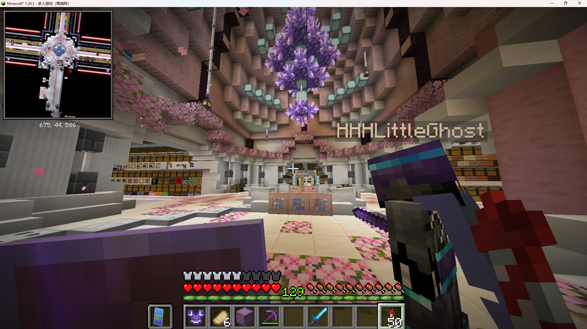
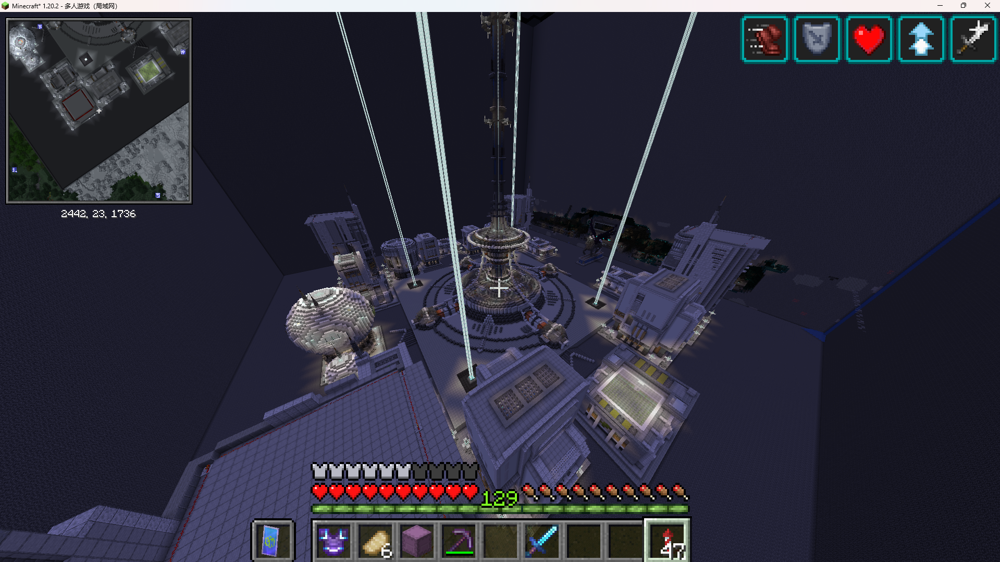
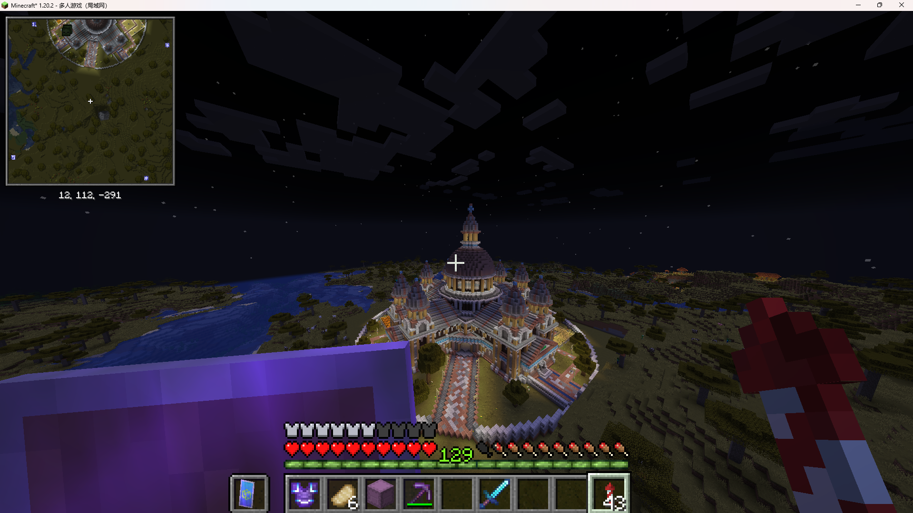
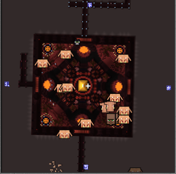

Continuing from the previous chapter, I mentioned that I am a Minecraft server owner. Then I added a mod to my server that can help us place blocks quickly to optimize our gaming experience. It's been a few weeks since the plugin was installed, so let's take a look at what's going on inside the server.In order not to disturb the normal play of the server during the demonstration, my friends and I opened a LAN room for demonstration. (save is copied from the server)
First, we built the largest machine in the server, which we called all items. We can put stackable items in the game into the middle pool to achieve automatic classification. This greatly increases our efficiency in finding materials.
This machine alone is definitely not enough, so we hollowed out the 17*17 block and established this industrial zone. Of course there is this large exchange.
 It’s still not over here. If we talk about the industrial area, placing all items and exchanges too close will cause the game to freeze. In order to avoid this problem, we have to place these three buildings far away. So how can we quickly place them in the industrial area? Traveling between the three becomes a problem. There is a mechanism in Minecraft that the 8-block distance in the main world is equal to the 1-block distance in the lower world. Using this mechanism, we can quickly shuttle between these locations by building nether transportation. Complete the rapid transportation of materials.
